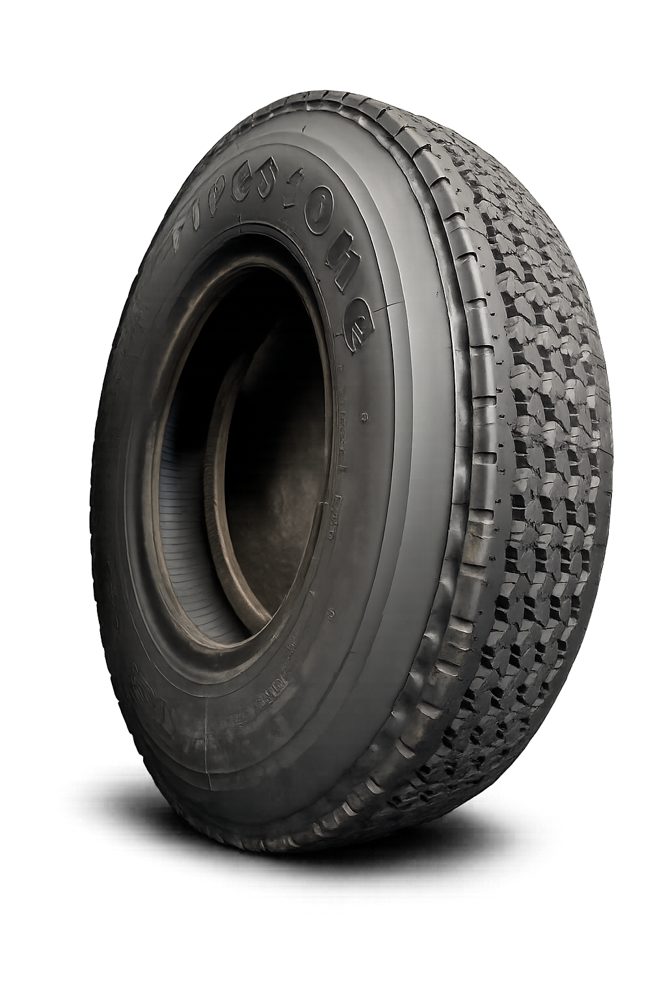

VULKANISIR PANAS & DINGIN
Mitra terpercaya untuk layanan vulkanisir ban panas dan dingin bagi armada truk, bus, dan kendaraan niaga.

VULKANISIR PUSTAM adalah penyedia jasa vulkanisir ban yang berfokus pada kebutuhan armada truk, bus, dan kendaraan niaga. Dengan pengalaman serta proses pengerjaan yang teliti, kami menghadirkan ban vulkanisir yang aman, awet, dan siap digunakan kembali. Kami mengutamakan kualitas hasil, ketepatan waktu pengerjaan, serta pelayanan yang profesional agar setiap pelanggan memperoleh solusi yang efisien dan bernilai ekonomis tanpa mengurangi standar keselamatan.
Kami menyediakan layanan vulkanisir ban dengan kualitas terbaik untuk memenuhi kebutuhan armada niaga.
Proses vulkanisir dilakukan menggunakan cetakan dan tekanan tinggi sehingga menghasilkan tapak ban yang menyatu sempurna, kuat, dan siap menghadapi beban kerja berat.
Menggunakan proses curing dengan Chamber Autoclave untuk menghasilkan ikatan tapak ban yang kuat, presisi, serta berkualitas sesuai standar vulkanisir modern.
Kepercayaan pelanggan adalah prioritas kami. Kami selalu mengutamakan kualitas hasil vulkanisir, ketelitian pengerjaan, dan pelayanan terbaik.
Setiap pengerjaan vulkanisir disertai garansi sesuai ketentuan yang berlaku sebagai bentuk komitmen kami terhadap kualitas.
Menggunakan proses pengerjaan yang mengutamakan kualitas, presisi, dan keamanan agar hasil lebih maksimal.
Memberikan hasil vulkanisir berkualitas dengan harga yang tetap terjangkau tanpa mengurangi mutu pengerjaan.
Melayani setiap pelanggan dengan ramah, cepat, dan mengutamakan kepuasan serta ketepatan waktu.